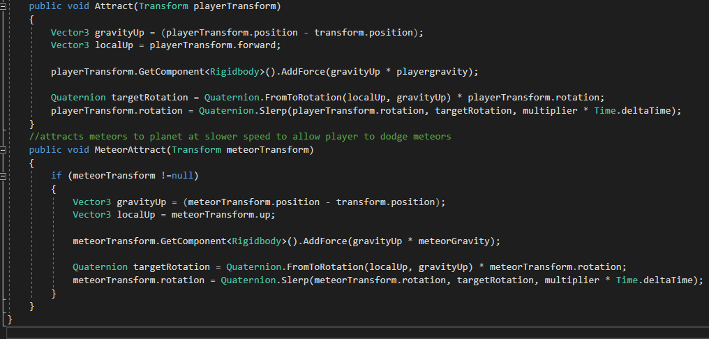

The Project itself
I got the idea to do this project from a well-known youtuber that goes by the name "Brackeys". I noticed that he submitted a game for the Ludum-dare called "Shrinking planet". The concept was very interesting and involved mechanics that I haven't used before. I decided that I wanted to test my skills at making this game in a very limited amount of time. The Ludum-dare has a 24 hour limit, but since I didn't need any time for the concepting I wanted to do it faster. Starting with the planning board I had a good idea of what needed to be done and how time needed to be spend. This was definitely one of my favourite projects since I learned how to deal with time-stress and still deliver a good product.
The planet
Making the planet was the easy part. I started off with a colored and made a script that shrinks it over time and limits it at a minimum size. Afterwards I added a UI element visually displaying the size of the planet. Additionally I came up with a score system that would increase faster the longer the player survived.
The gravity
The gravity was one of the more complex systems. I needed to come up with a system that would pull certain objects towards it's center based on the distance it was from it's pivot. I ended up with a system that works perfectly fine for this project that felt really smooth.
The Car
The Player plays as a car. The driving mechanic of the car was quite a challenge to overcome. It turns out it's not that easy to make a realistic car that drives on a round surface without any jittering. At first I had the idea of giving the player the ability to acelerate and decelerate and rewarding the player for going faster by adding more score. This turned out to not work so well since the gameplay would become very boring if the player was just driving at minimum speed since the meteors would rarely hit the player. I ended up giving the car a static speed that was relatively high to create a more fast-paced gamestyle which required the player to pay close attention to what was happening.
The meteors
The meteor spawning and functionality were the most enjoyable scripts to work on since they required me to learn alot of new things I didn't know before. They also truely added to the gameplay experience and made the game fun to play. This was also one of the first times that I worked with the unity particlesystems and I'm glad with how it turned out. The meteors looked great and fitted into the game really well.